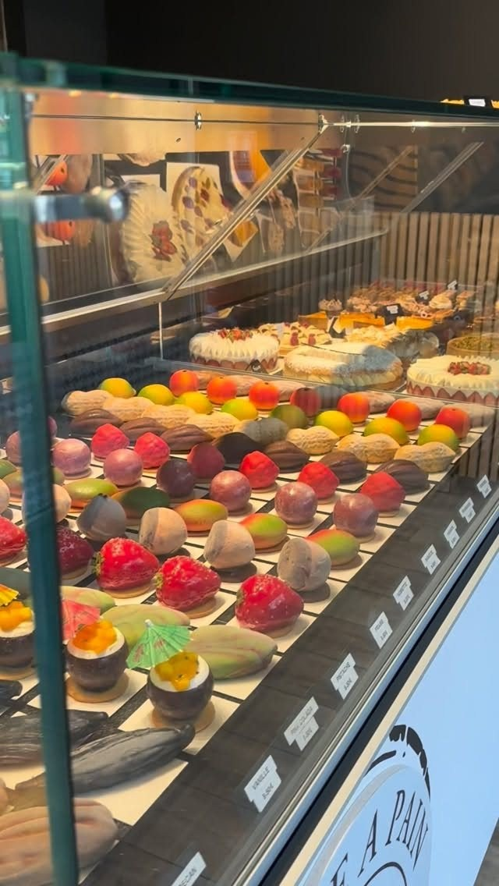
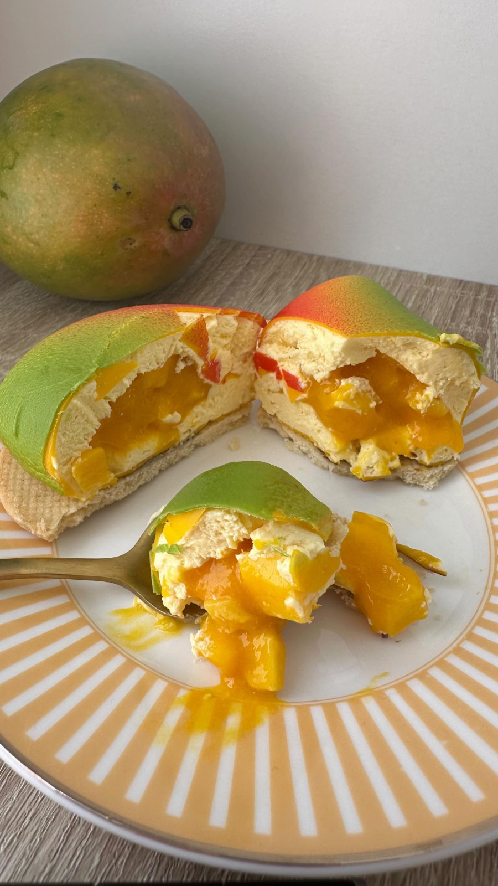
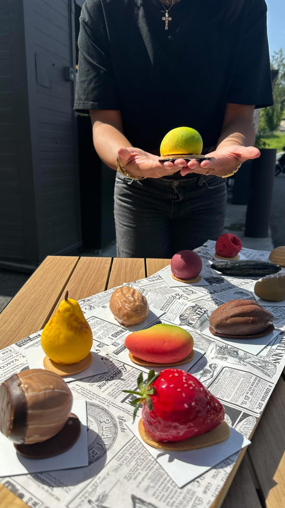

Le trompe-l'œil, notre signature
Un citron qui n'est pas un citron. Une cacahuète grande comme la main. Des desserts sculptés pour surprendre l'œil, puis le palais.

Comment naît un trompe-l'œil
Tout commence par le fruit lui-même. On observe sa forme, sa peau, ses nuances, puis on le reconstruit en pâtisserie : une mousse légère, un cœur coulant ou croquant, une fine coque et un velours de couleur posé au pistolet.
Le résultat doit tenir deux promesses. À l'œil, on doit hésiter. En bouche, le goût annoncé doit être là, franc et net : la mangue a le goût de la mangue, la noisette celui de la noisette.


La collection
Elle change avec les saisons et les envies du chef. Voici quelques créations passées en vitrine. Touchez une photo pour l'agrandir.
Comment en profiter
À l'unité, en boutique
La sélection du jour vous attend en vitrine à Mimet et à Aix-en-Provence. Venez tôt le week-end, les favoris partent vite.
En coffret à offrir
Un assortiment de plusieurs fruits, à commander à l'avance. Idéal pour un dîner, un remerciement ou un cadeau qui fait parler.
En format XL
Le trompe-l'œil à partager, en pièce centrale d'un anniversaire ou d'une réception. Sur commande et sur devis.
Envie d'un coffret ou d'un trompe-l'œil XL ?
Indiquez-nous la date et le nombre de personnes, nous vous disons ce qui est possible.